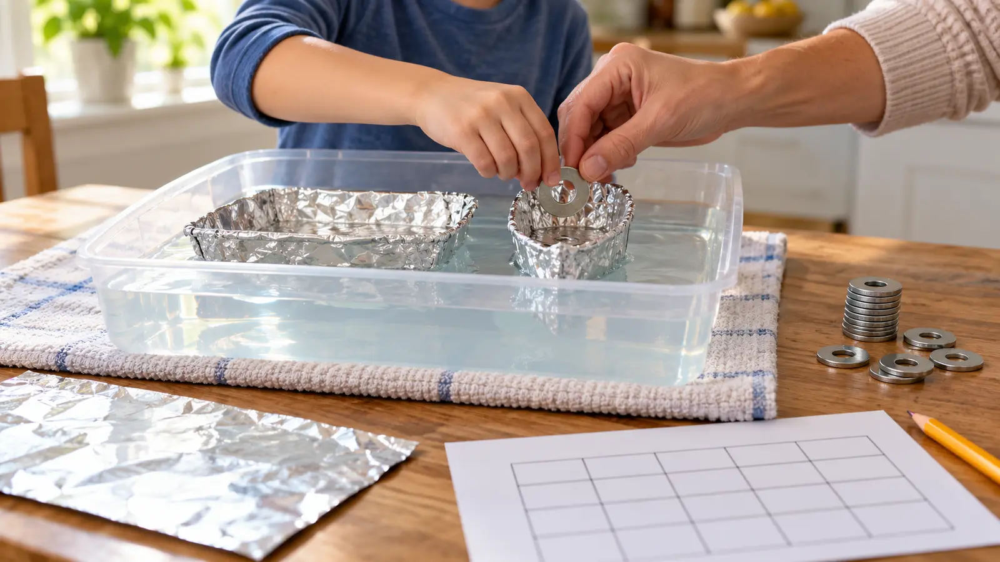

Shape A
Trial 1: ___ washers
Trial 2: ___ washers
Trial 3: ___ washers
Middle result: ___
AT HOME · NO-SPEND STEM · EXPLORATION
Two equal foil sheets. One changed shape. Identical washers added one at a time. If the family changes everything at once, it built two boats but learned almost nothing.

Making a foil boat that holds random coins is fun. Making two equal foil boats, changing one shape and testing with the same load is an experiment. NASA education material uses a container of water, aluminum foil and small masses or coins to explore floating boats. This family version tightens the method: equal foil area, identical washers, the same tub, the same loading rule and three trials per shape.
The goal is not “win with the biggest number.” The goal is to write a defensible sentence: “In our six tests, shape B held more washers before water crossed the rim because…” The last word can stay uncertain.
No app, scale, stopwatch, branded kit or special foil is necessary. Keep phones and chargers out of the splash zone.
An object floats when the upward buoyant force from displaced water balances its weight. NASA’s Glenn Research Center explains buoyancy through the weight of displaced fluid. A solid piece of aluminum sinks because its material is denser than water; shaped foil can enclose air and spread its total mass across a larger water-displacing form. As washers are added, the boat sits lower and displaces more water. When the rim lets water in, the system changes fast.
That does not mean “wider always wins.” Tall sides can add reserve before the rim floods, but a narrow tall boat may tip. A very wide shallow boat may be stable but have little freeboard. Wrinkles, tiny tears, uneven loading and rebuilding differences all affect the result. The lab gives evidence for these boats under this rule—not a universal best hull.
Choose only one follow-up. The family can test centered versus evenly distributed load with the same shape, but that is a new experiment and needs a new card.
Adults supervise water and all loads. Do not use the tub on stairs, a wobbly surface or near power strips. Wipe spills immediately. Foil edges can become sharp when torn or crushed; adults inspect and discard damaged material. Count every washer before and after. Keep small parts away from younger siblings, pets and anyone who mouths objects. Do not use lead fishing weights, batteries, magnets, medication, food that will be eaten, or valuable coins.
This activity does not teach real boat stability, life-jacket rules or water rescue. Children need direct adult supervision around any water, including shallow tubs. Empty the tub when finished.
Bad weather: this is already an indoor backup. Keep it away from storm-related leaks or power hazards. Low energy: build one boat, predict the load, run one supervised test and record the failure mode. Do not call that a comparison. No safe small loads: use identical large plastic blocks counted by an adult. No water today: use equal foil sheets to build two freestanding trays, then predict which will float lower; save testing for another day. Child hates wet textures: the child can record while an adult loads.
For a dry measurement activity, use the room measure-and-draw plan. For another controlled family build, try the paper-bridge load test. The flashlight shadow lab works when water is a bad fit.
Skip this activity if water near the available workspace is unsafe, the household cannot secure the loads, a child cannot resist mouthing materials, or cleanup stress will outweigh the experiment. Skip the three-trial method for a child who only wants open-ended building; let them build without pretending it produced controlled evidence.
Reviewed October 31, 2026 using NASA’s official Aeronautics With You When You Fly educator guide, which includes a floating-boats experiment with water, foil and small masses, and NASA Glenn Research Center’s buoyancy and Archimedes’ principle explainer. The 25-minute sequence, equal-sheet rule, six-test card, middle-result method and safety boundaries are independent editorial adaptations—not NASA instructions, a curriculum endorsement or proof of a hull design. No affiliate links are attached. Report corrections through About.
MAKE THE WEEK COUNT
Build the plan your family can finish well, then leave enough energy for the next part of the day.
More family plans